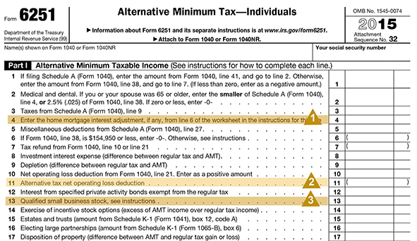

The "regular" income tax is calculated based on a set of rules, and the AMT is calculated on another set of rules. Those two sets of rules do not match. While the rules associated with the Alternative Minimum Tax are complex and far outside of the scope of this lesson, there are several items captured on Form 6251 that are worth noting.
Click on each to view more information.

1. If the client uses the proceeds of a home equity line of credit for something other than a home improvement, the interest is not deductible for AMT purposes. Thus, the client may not be achieving the favorable after-tax rate that was expected. When you see an entry here, it may mean the client shouild consider other modes of financing to see if a better after-tax rate can be achieved.
2. Private activity bonds are special municipal bonds. While the interest from these bonds is not included in the "regular income tax," it is included for AMT purposes. The presence of an entry on this line warrants an examination of the client's asset allocation and consideration of alternatives that will not be included in AMT.
3. When incentive stock options are exercised, the spread between the exercise price and the current market price is not treated as income for "regular taxes," but it is included as income for AMT purposes. The additional tax generated can be substantial, generating a cash flow problem for the client, especially if the client wishes to hold onto the exercised securities as required by the tax rules (if they are to receive long-term capital gain treatment upon sale). Furthermore, when you see one exercise, there are likely to be additional exercises in the future.
In short, the presence of incentive stock options offers a number of potential areas the client may have needs, leading the Advisor to:
Assist with planning and financing the exercise of options.
Provide liquidity to pay the tax.
Offer strategies by which the client can reduce the risk of holding a concentration. Many institutions offer some sophisticated planning in this regard.
Provide additional planning services once the stock concentration is ultimately liquidated.
A good open-ended question for a client who hopes to pay lower taxes by holding exercised stock for a year is to ask, "Given today's volatile market, how have you addressed the risk of holding a large stock concentration?" Of course, like any good question, don't ask the question without being prepared to present the solutions you can offer.
to view more information.